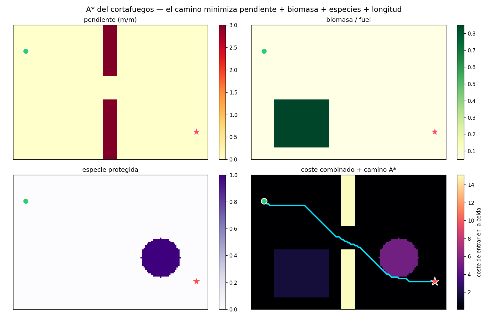

testing-lab · trazado del cortafuegos · índice
A* — trazar el cortafuegos óptimo
El corazón del producto: dado un origen y un destino sobre el terreno, encontrar el camino de menor coste para un cortafuegos — evitando pendientes fuertes, biomasa densa y especies protegidas. Aquí se ve el A* real del proyecto trabajando sobre terreno sintético.
api/pathfinding.py): el pathfinding no es física. El
experimento importa la función real y la corre sobre un
terreno sintético controlado. La animación usa un A* "espejo" que reproduce el
mismo coste y heurística — verificado que da exactamente el mismo
camino que el real.
1 · La función de coste — qué es un camino "bueno"
A* no busca el camino más corto, sino el más barato según una función de coste que codifica lo que queremos de un cortafuegos. Entrar en una celda cuesta:
- longitud — caminos cortos (un cortafuegos largo cuesta más de abrir y mantener).
- pendiente — evitar laderas empinadas (difíciles de despejar; el fuego corre más rápido cuesta arriba).
- biomasa / fuel — preferir donde hay menos que talar.
- especie protegida — penalizar cruzar pino carrasco, encina o quejigo (biodiversidad a preservar).
Los cuatro pesos son parametrizables (CosteParams) —
es lo que permite el análisis de sensibilidad del TFG (ver §3).

2 · A* y la heurística — buscar con un imán hacia la meta
A* mantiene una frontera de nodos por explorar y siempre expande el más
prometedor: el que minimiza f = g + h, donde g es
el coste real acumulado desde el origen y h es una estimación
optimista de lo que falta hasta la meta. Esa estimación es la heurística:
Que sea una cota inferior (nunca sobreestima) es lo que
garantiza que A* encuentre el camino óptimo. Y que apunte hacia la meta es lo
que lo hace rápido: compáralo con Dijkstra (que es A* con h = 0,
sin imán):


3 · Pesos ajustables — análisis de sensibilidad
Cambiar los pesos cambia qué evita el camino. Subiendo el peso de las especies protegidas, el trazado pasa de atravesar la mancha a rodearla:

4 · Cómo encaja en el proyecto
El A* devuelve un vector de celdas [[x, z], …],
idéntico al que produce el dibujado manual del cortafuegos. Por eso se envía por
el mismo flujo (POST /firebreak) y reutiliza sin código
nuevo todo lo que ya hace el motor con un cortafuegos pintado a mano:
quitar combustible, terraformar la franja, marcarla como CORTAFUEGOS
y aplicar el enfriamiento de contención. El trazado automático y el manual
acaban en el mismo sitio.
Parte 2 — la función de coste, término a término
Las preguntas finas: ¿qué es exactamente cada término? Todo lo que
sigue está leído del código real (api/pathfinding.py,
api/dem.py, api/main.py). Un detalle transversal: los
cuatro términos del terreno se evalúan en la celda de destino
(la que se va a "entrar"), no en la de origen del paso.
paso — ¿siempre 1.0 / √2?
Sí, exactamente: 1.0 para los 4 vecinos ortogonales y
√2 para los 4 diagonales, sin normalización adicional. El
valor va precalculado en la tabla de vecinos y se multiplica por
w_longitud:
_DIAG = math.sqrt(2.0)
_VECINOS = [(1,0, 1.0), (-1,0, 1.0), (0,1, 1.0), (0,-1, 1.0),
(1,1,_DIAG), (1,-1,_DIAG), (-1,1,_DIAG), (-1,-1,_DIAG)]
# coste: params.w_longitud * pasoNo hay factor por tamaño de celda (1 celda = 1 m). La heurística usa distancia
euclídea (math.hypot), coherente con ese paso → admisible.
pendiente(celda) — ¿cómo se calcula?
Es el gradiente local de elevación por celda, precalculado del
heightmap. No es la pendiente_media del Cuadrante
(esa es la del motor, gruesa, una por cuadrante de 50×50), ni se calcula en el
momento de la transición. En dem.py:
self.elev = ELEV_MIN + (raw16bit/65535)·(ELEV_MAX−ELEV_MIN) # metros
gz, gx = np.gradient(self.elev) # diferencias centradas, espaciado 1 m
self.slope = sqrt(gx² + gz²) # magnitud del gradiente (m/m)El A* lee self.slope[nz, nx] — la pendiente de la celda
destino. Coincide con la elevación que generó world.dat
(misma convención que build_world.py).
combustibilidad(celda) — ¿transformación?
Ninguna. Es directamente el fuel_coefficient de
la celda destino (∈ [0,1]), el mismo que usa la simulación. Se lee de
world.dat en cargar_fuel() y entra lineal:
w_biomasa · self.fuel[nz, nx]. Sin curvas ni umbrales.
penalización_especie(celda) — ¿cómo se mapea?
Es un indicador binario (0 ó 1) por lookup de color
contra el mapa rasterizado de especies — no son umbrales por fuel ni el
hiperespectral en crudo. En cargar_especies_penal() se lee
data/especies_map.png (RGB, generado por build_world a
partir de la segmentación hiperespectral) y se marca la celda como penalizada si
su color coincide exactamente con una especie protegida:
| Especie protegida | Color RGB en el mapa |
|---|---|
| Pino carrasco | cian (0, 255, 255) |
| Encina | violeta (127, 0, 255) |
| Quejigo | naranja (255, 128, 0) |
El coste suma w_especies · 1 si la celda es de especie protegida y
0 si no. Es decir:
- Binario y mismo peso para las tres especies (no hay un peso distinto por especie).
- El conjunto de especies penalizadas es configurable
(argumento
colores=), por defecto esas tres. - Si no existe
especies_map.png→ todoFalse: el A* sigue trazando con los otros tres factores (sin penalización de especie).
Los pesos w_* — ¿hardcodeados, parámetro, o desde Godot?
Configurables por parámetro, con defaults — ni constantes enterradas ni (todavía) elegidos desde Godot:
- Son un
dataclass CosteParamscon defaultsw_longitud=1, w_pendiente=5, w_biomasa=2, w_especies=5, ajustables en cada llamada abuscar(params=…). - La API los expone como campo opcional
pesosenPOST /trazar: si el cliente los envía se aplican, si no, defaults. La tubería de configuración existe de extremo a extremo. - Pero la escena de Godot actual no los envía:
_pedir_trazado()manda soloorigenydestino→ en la práctica se usan los defaults.
pesos de /trazar.
Cómo reproducir
testing-lab/.venv/bin/python testing-lab/experiments/astar.py # escenario + heurística + sensibilidad + GIF
testing-lab/.venv/bin/python testing-lab/tests/test_astar.py # cordura (espejo==real, A*≤Dijkstra, contiguo)